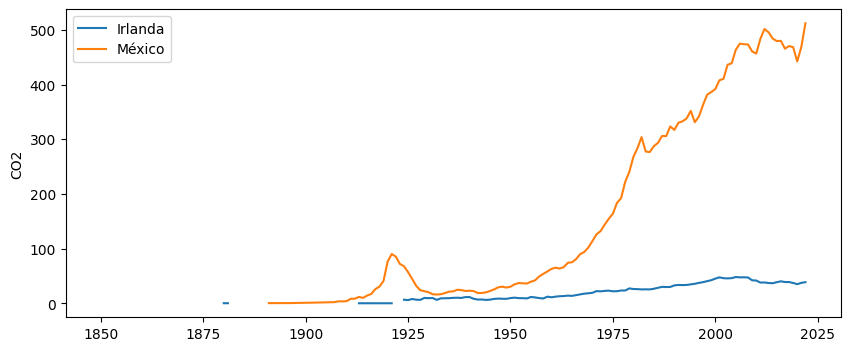
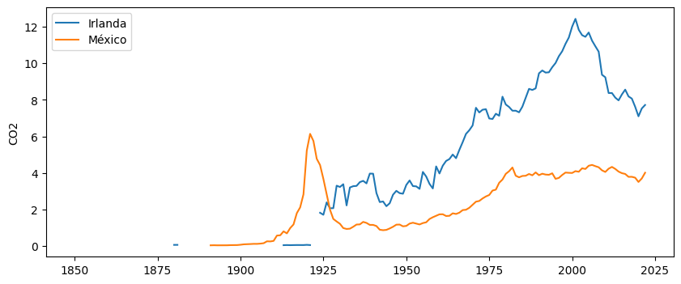

import pandas as pd
import matplotlib.pyplot as plt19 Estructura de datos de Our World in Data
@article{owid-co2-gdp-decoupling, author = {Hannah Ritchie}, title = {Many countries have decoupled economic growth from CO2 emissions, even if we take offshored production into account}, journal = {Our World in Data}, year = {2021}, note = {https://ourworldindata.org/co2-gdp-decoupling} }
Datos de: https://github.com/owid/co2-data?tab=readme-ov-file
Ireland es uno de los países que han disminuido las emisiones de CO2 per capita. Vamos a compararla con México.
f = "../data/owid-co2-data.csv"
co2 = pd.read_csv(f)
co2.columnsIndex(['country', 'year', 'iso_code', 'population', 'gdp', 'cement_co2',
'cement_co2_per_capita', 'co2', 'co2_growth_abs', 'co2_growth_prct',
'co2_including_luc', 'co2_including_luc_growth_abs',
'co2_including_luc_growth_prct', 'co2_including_luc_per_capita',
'co2_including_luc_per_gdp', 'co2_including_luc_per_unit_energy',
'co2_per_capita', 'co2_per_gdp', 'co2_per_unit_energy', 'coal_co2',
'coal_co2_per_capita', 'consumption_co2', 'consumption_co2_per_capita',
'consumption_co2_per_gdp', 'cumulative_cement_co2', 'cumulative_co2',
'cumulative_co2_including_luc', 'cumulative_coal_co2',
'cumulative_flaring_co2', 'cumulative_gas_co2', 'cumulative_luc_co2',
'cumulative_oil_co2', 'cumulative_other_co2', 'energy_per_capita',
'energy_per_gdp', 'flaring_co2', 'flaring_co2_per_capita', 'gas_co2',
'gas_co2_per_capita', 'ghg_excluding_lucf_per_capita', 'ghg_per_capita',
'land_use_change_co2', 'land_use_change_co2_per_capita', 'methane',
'methane_per_capita', 'nitrous_oxide', 'nitrous_oxide_per_capita',
'oil_co2', 'oil_co2_per_capita', 'other_co2_per_capita',
'other_industry_co2', 'primary_energy_consumption',
'share_global_cement_co2', 'share_global_co2',
'share_global_co2_including_luc', 'share_global_coal_co2',
'share_global_cumulative_cement_co2', 'share_global_cumulative_co2',
'share_global_cumulative_co2_including_luc',
'share_global_cumulative_coal_co2',
'share_global_cumulative_flaring_co2',
'share_global_cumulative_gas_co2', 'share_global_cumulative_luc_co2',
'share_global_cumulative_oil_co2', 'share_global_cumulative_other_co2',
'share_global_flaring_co2', 'share_global_gas_co2',
'share_global_luc_co2', 'share_global_oil_co2',
'share_global_other_co2', 'share_of_temperature_change_from_ghg',
'temperature_change_from_ch4', 'temperature_change_from_co2',
'temperature_change_from_ghg', 'temperature_change_from_n2o',
'total_ghg', 'total_ghg_excluding_lucf', 'trade_co2',
'trade_co2_share'],
dtype='object')co2.country.unique()array(['Afghanistan', 'Africa', 'Africa (GCP)', 'Albania', 'Algeria',
'Andorra', 'Angola', 'Anguilla', 'Antarctica',
'Antigua and Barbuda', 'Argentina', 'Armenia', 'Aruba', 'Asia',
'Asia (GCP)', 'Asia (excl. China and India)', 'Australia',
'Austria', 'Azerbaijan', 'Bahamas', 'Bahrain', 'Bangladesh',
'Barbados', 'Belarus', 'Belgium', 'Belize', 'Benin', 'Bermuda',
'Bhutan', 'Bolivia', 'Bonaire Sint Eustatius and Saba',
'Bosnia and Herzegovina', 'Botswana', 'Brazil',
'British Virgin Islands', 'Brunei', 'Bulgaria', 'Burkina Faso',
'Burundi', 'Cambodia', 'Cameroon', 'Canada', 'Cape Verde',
'Central African Republic', 'Central America (GCP)', 'Chad',
'Chile', 'China', 'Christmas Island', 'Colombia', 'Comoros',
'Congo', 'Cook Islands', 'Costa Rica', "Cote d'Ivoire", 'Croatia',
'Cuba', 'Curacao', 'Cyprus', 'Czechia',
'Democratic Republic of Congo', 'Denmark', 'Djibouti', 'Dominica',
'Dominican Republic', 'East Timor', 'Ecuador', 'Egypt',
'El Salvador', 'Equatorial Guinea', 'Eritrea', 'Estonia',
'Eswatini', 'Ethiopia', 'Europe', 'Europe (GCP)',
'Europe (excl. EU-27)', 'Europe (excl. EU-28)',
'European Union (27)', 'European Union (28)', 'Faroe Islands',
'Fiji', 'Finland', 'France', 'French Polynesia', 'Gabon', 'Gambia',
'Georgia', 'Germany', 'Ghana', 'Greece', 'Greenland', 'Grenada',
'Guatemala', 'Guinea', 'Guinea-Bissau', 'Guyana', 'Haiti',
'High-income countries', 'Honduras', 'Hong Kong', 'Hungary',
'Iceland', 'India', 'Indonesia', 'International aviation',
'International shipping', 'International transport', 'Iran',
'Iraq', 'Ireland', 'Israel', 'Italy', 'Jamaica', 'Japan', 'Jordan',
'Kazakhstan', 'Kenya', 'Kiribati', 'Kosovo', 'Kuwait',
'Kuwaiti Oil Fires', 'Kuwaiti Oil Fires (GCP)', 'Kyrgyzstan',
'Laos', 'Latvia', 'Least developed countries (Jones et al.)',
'Lebanon', 'Leeward Islands', 'Leeward Islands (GCP)', 'Lesotho',
'Liberia', 'Libya', 'Liechtenstein', 'Lithuania',
'Low-income countries', 'Lower-middle-income countries',
'Luxembourg', 'Macao', 'Madagascar', 'Malawi', 'Malaysia',
'Maldives', 'Mali', 'Malta', 'Marshall Islands', 'Mauritania',
'Mauritius', 'Mexico', 'Micronesia (country)', 'Middle East (GCP)',
'Moldova', 'Monaco', 'Mongolia', 'Montenegro', 'Montserrat',
'Morocco', 'Mozambique', 'Myanmar', 'Namibia', 'Nauru', 'Nepal',
'Netherlands', 'New Caledonia', 'New Zealand', 'Nicaragua',
'Niger', 'Nigeria', 'Niue', 'Non-OECD (GCP)', 'North America',
'North America (GCP)', 'North America (excl. USA)', 'North Korea',
'North Macedonia', 'Norway', 'OECD (GCP)', 'OECD (Jones et al.)',
'Oceania', 'Oceania (GCP)', 'Oman', 'Pakistan', 'Palau',
'Palestine', 'Panama', 'Panama Canal Zone',
'Panama Canal Zone (GCP)', 'Papua New Guinea', 'Paraguay', 'Peru',
'Philippines', 'Poland', 'Portugal', 'Qatar', 'Romania', 'Russia',
'Rwanda', 'Ryukyu Islands', 'Ryukyu Islands (GCP)', 'Saint Helena',
'Saint Kitts and Nevis', 'Saint Lucia',
'Saint Pierre and Miquelon', 'Saint Vincent and the Grenadines',
'Samoa', 'San Marino', 'Sao Tome and Principe', 'Saudi Arabia',
'Senegal', 'Serbia', 'Seychelles', 'Sierra Leone', 'Singapore',
'Sint Maarten (Dutch part)', 'Slovakia', 'Slovenia',
'Solomon Islands', 'Somalia', 'South Africa', 'South America',
'South America (GCP)', 'South Korea', 'South Sudan', 'Spain',
'Sri Lanka', 'St. Kitts-Nevis-Anguilla',
'St. Kitts-Nevis-Anguilla (GCP)', 'Sudan', 'Suriname', 'Sweden',
'Switzerland', 'Syria', 'Taiwan', 'Tajikistan', 'Tanzania',
'Thailand', 'Togo', 'Tonga', 'Trinidad and Tobago', 'Tunisia',
'Turkey', 'Turkmenistan', 'Turks and Caicos Islands', 'Tuvalu',
'Uganda', 'Ukraine', 'United Arab Emirates', 'United Kingdom',
'United States', 'Upper-middle-income countries', 'Uruguay',
'Uzbekistan', 'Vanuatu', 'Vatican', 'Venezuela', 'Vietnam',
'Wallis and Futuna', 'World', 'Yemen', 'Zambia', 'Zimbabwe'],
dtype=object)irlanda = co2.loc[co2["country"] == "Ireland"][["year","co2","co2_per_capita","population"]]
mexico = co2.loc[co2["country"] == "Mexico"][["year","co2","co2_per_capita","population"]]fig, ax = plt.subplots(figsize=(10,4))
ax.plot(irlanda.year,irlanda.co2,label="Irlanda")
ax.plot(mexico.year,mexico.co2,label="México")
ax.set_ylabel("CO2")
ax.legend()
fig, ax = plt.subplots(figsize=(10,4))
ax.plot(irlanda.year,irlanda.co2_per_capita,label="Irlanda")
ax.plot(mexico.year,mexico.co2_per_capita,label="México")
ax.set_ylabel("CO2")
ax.legend()